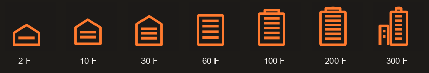

STEPLOOP / ANDROID 1.1.2每一步向上，都有新的高度。
首页加入 37 种独立参照，从身边物体、城市地标到珠峰；记录中的建筑按每次训练累计完成层数分为 7 档。保留已确认的黑橙视觉。以下是实际 Android 画面，使用明确的合成成绩验证边界；原始截图和界面树均随图册保存。
7 档图标 · 来自实际截图

层数范围：0–5、6–15、16–30、31–60、61–100、101–200、201 层及以上。准确层数仍在记录正文中显示，多轮相加，修改层数后同步更新。